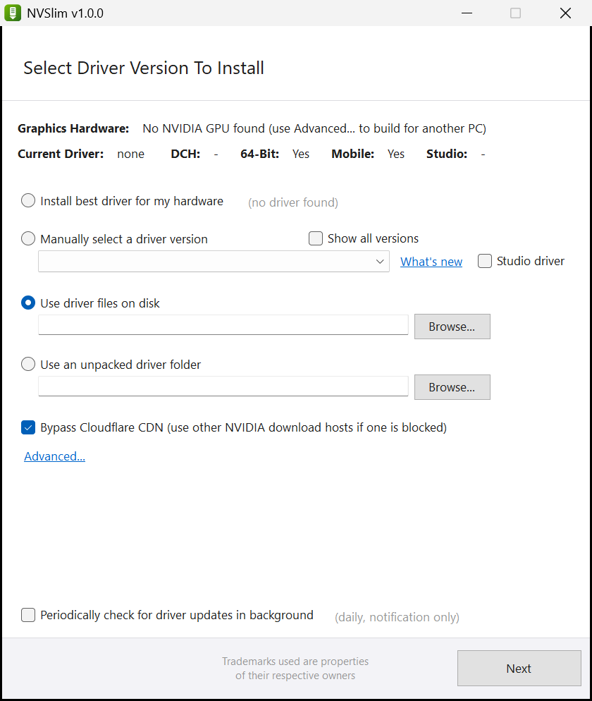

Your graphics driver,
without the extras.
NVSlim builds a custom NVIDIA or AMD driver installer. Keep the driver and the parts you use, leave out telemetry, overlays and apps you never asked for.
Free. No subscription, no account, no installer.
Works with NVIDIA GeForce and AMD Radeon drivers stress test with FurMark 1 (not included) in the style of NVCleanstall
Windows 10 and 11, 64-bit 230 KB version 1.0.0 no installer

A clean driver in four steps
The same steps for NVIDIA and AMD.
- 1
Pick the driver
NVSlim finds your card and the newest driver on nvidia.com or amd.com. Or choose an older version, or a driver file you already downloaded.
- 2
Choose the parts
Keep the display driver, HDMI audio and what you use. Leave out telemetry, the NVIDIA App or AMD Software if you don't want them.
- 3
Set the tweaks
Clean install, no installer telemetry, unattended setup, restore point, and expert options such as MSI mode or the NVENC patch.
- 4
Install or save
Install right away, or save a folder or one setup file for other PCs and USB sticks.
What it does
Built from what driver tinkerers asked for.
NVIDIA
Removes Telemetry, ShadowPlay or the NVIDIA App without NVIDIA's setup putting them back. Legacy Control Panel without the Microsoft Store.
AMD
Driver-only installs through Windows itself, or Adrenalin without the User Experience Program, Ryzen Master SDK and laptop drivers you don't need.
Services on demand
NVIDIA's container services start only while the Control Panel or NVIDIA App is open.
GPU Info
A graphics card details window: chip, memory, clocks, bus, BIOS, driver, Resizable BAR and live sensors.
Stress test
Starts FurMark after the install to check the new driver under load.
Nothing hidden
Drivers come straight from NVIDIA and AMD and are checked for their signature. Every change is listed in the log.
Questions
Is NVSlim free?
Yes. There is no paid version and no account.
Windows says “Windows protected your PC”.
NVSlim is not code-signed yet, so SmartScreen warns about new files. Choose More info, then Run anyway.
Do I need a GPU-Z or FurMark copy?
GPU Info is part of NVSlim. For the stress test NVSlim starts your installed FurMark 1, or opens Geeks3D's download page; FurMark is Geeks3D's program and is not included.
What does “re-signs the driver” mean?
A few expert tweaks change driver files. NVSlim then signs the package with a certificate made just for it and asks before trusting that certificate on your PC. By default it is removed again right after the install.
Has it been tested?
Building packages from real NVIDIA 621.01 and AMD 26.10.1 drivers is tested. The installation itself is new: create a restore point (on by default) and keep the log, which you find on the last page.
Is this an official NVIDIA, AMD or TechPowerUp product?
No. NVSlim is an independent tool, not affiliated with or endorsed by NVIDIA, AMD, TechPowerUp or Geeks3D. NVIDIA, GeForce, AMD, Radeon and Adrenalin are trademarks of their owners.